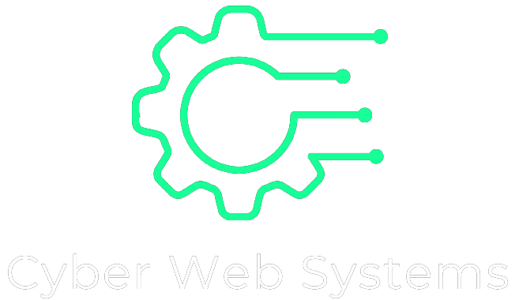

Texto 1
Texto 2
Texto 3

Transforme sua visão em realidade com os melhores
sites
personalizados criados por
nós!
Quero meu site personalizado
Você sabe a importancia de ter um
site profissional
no seu negócio?
Aumenta a
visibilidade
da sua empresa na internet.
Melhora a confiança e
credibilidade
dos clientes.
Fornece informações
valiosas
sobre seus produtos ou serviços.
Amplia o
alcance
do seu público-alvo.
Facilita a
comunicação
com os clientes e prospectos.
Melhora o suporte ao
cliente
.
Quero meu site personalizado
Conheça um pouco do nosso trabalho!